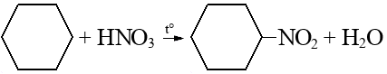

Определение
Циклоалканы — карбоциклические углеводороды, содержащие только одинарные связи и соответствующие общей формуле:
CnH2n
n≥3
Номенклатура и изомерия
- Изомерия величины цепи цикла:
Этилциклопропан Метилциклобутан - Изомерия величины цепи заместителей:
1-метил-2-пропилциклопентан 1,2-диэтилциклопентан - Изомерия положения заместителей в цепи:
1,1-диметилциклогексан 1,2-диметилциклогексан - Межклассовая изомерия:
циклопропан пропилен - Геометрическая изомерия:
цис-1,2-диметилциклопропан транс-1,2-диметилциклопропан
Получение
- Выделение из нефти
- Гидрирование аренов
-
Внутримолекулярная реакция Вюрца (взаимодействие дигалоген алканов с активными металлами):
- Дегидроциклизация алканов:

Образуются только циклоалканы с 5 и 6 атомами C в главной цепи
Химические свойства
Низшие циклы (3-4 атома): реакции присоединения
Высшие циклы (5 и более атомов): реакции замещения
- Галогенирование:
- Гидрогалогенирование:
- Гидрирование (кроме C≥6):
- Дегидрирование (высшие только при присутствии радикала):
- Реакция Коновалова (нитрирование):
